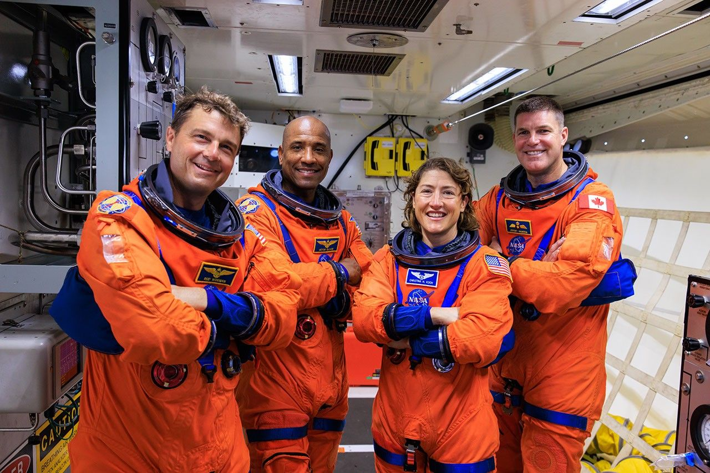
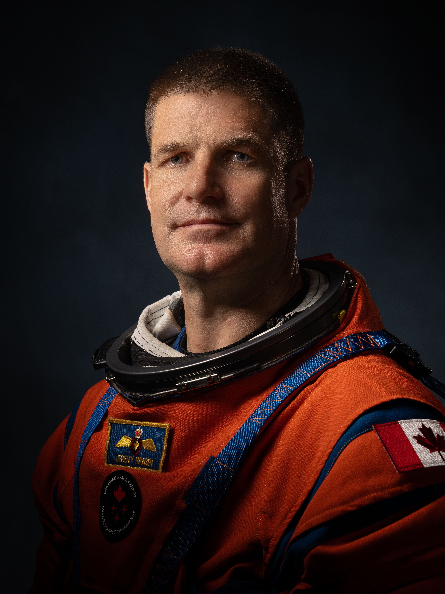
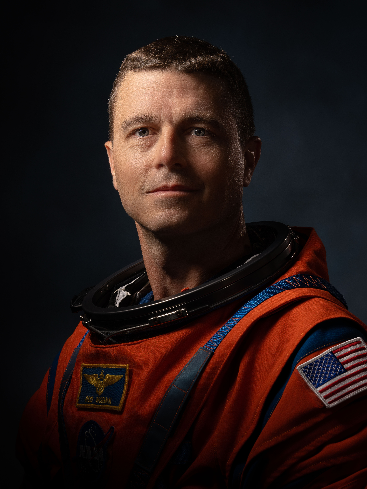

Lanzamiento y puesta en órbita
Despegue desde el Centro Espacial Kennedy a bordo del cohete SLS, el más potente jamás construido.
Artemis II: el regreso de la humanidad
Esta misión marca el regreso de los humanos a las cercanías de la Luna, viajando más lejos que nunca. La tripulación de cuatro astronautas pondrá a prueba los sistemas de soporte vital de la nave Orión en un viaje de 10 días que allanará el camino para el futuro alunizaje de Artemis III.

Despegue desde el Centro Espacial Kennedy a bordo del cohete SLS, el más potente jamás construido.
Viaje de más de 1.1 millones de km alrededor de la Luna, llegando a estar a 7,400 km de su superficie.
La nave Orión amerizó en el Océano Pacífico, probando el escudo térmico a más de 2,760 °C.
Pruebas finales de la nave Orión con el cohete SLS en el Centro Espacial Kennedy, superando los retrasos técnicos.
Despegue y primeras horas en órbita terrestre verificando los sistemas de la nave antes de ir hacia la Luna.
Paso por la cara oculta de la Luna, perdiendo comunicación durante 40 minutos y observando un eclipse solar.
Atraviesa la atmósfera a más de 30 veces la velocidad del sonido para amerizar de forma segura en el Pacífico.
Los cuatro astronautas seleccionados para Artemis II provienen de la NASA y la Agencia Espacial Canadiense (CSA), sumando una vasta experiencia en el espacio.

Especialista de Misión (CSA)

Comandante

Piloto en jefe

Especialista de Misión
Duración de la misión completa
Tripulación en la nave Orión
Distancia total viajada en la misión
Accede a la cobertura en español, infografías, el blog de la misión y contenido exclusivo